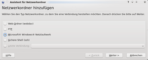
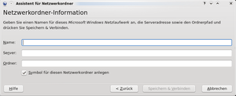

Samba Client KDE
Dieser Artikel wurde für die folgenden Ubuntu-Versionen getestet:
Ubuntu 16.04 Xenial Xerus
Windows- und Samba-Freigaben können mit den Dateimanagern der großen Desktopumgebungen GNOME und KDE direkt genutzt werden, ohne dass dafür die Installation zusätzlicher Pakete nötig wäre. Allerdings ist die Funktionalität dabei eingeschränkt. Deshalb ist dieser Weg vor allem dann sinnvoll, wenn es sich um gelegentliche Netzwerk-Verbindungen handelt, die vor allem zum Kopieren oder Übertragen von Daten verwendet werden.
Für Freigaben, auf die häufiger und mit verschiedenen Programmen zugegriffen werden soll, ist es vorzuziehen, diese ins Dateisystem des Client einzubinden (zu "mounten"). Hierfür gibt es verschiedene Möglichkeiten, die hier nur kurz vorgestellt werden. Ausführliche Beschreibungen finden sich jeweils auf eigenen Wiki-Seiten.
KDE bietet die Möglichkeit, im Netzwerk nach Freigaben zu suchen (zu "browsen"), diese anzuzeigen und auf diese dann zuzugreifen. Allerdings werden dabei keineswegs alle Funktionen des Protokolls CIFS unterstützt (z.B. keine CIFS-UNIX-Erweiterungen), und es können dann auch nicht alle Programme auf diese Freigaben zugreifen. So ist z.B. mit dem Audio-Player Audacious auf diese Weise kein Zugriff auf Freigaben möglich.
Achtung!
Nur KDE-Programme können auf die hier beschriebenen Möglichkeiten zum Einbinden von Windows- und Samba-Freigaben zugreifen. Falls eine dauerhafte Einbindung auch für Nicht-KDE-Programme erforderlich ist, kann z.B. das Programm Smb4K zum Einbinden der Freigabe(n) verwendet werden.
KIO-Slave¶
Für den Zugriff auf Samba Freigaben gibt es in der KDE einen speziellen KIO-Slave. Dieser erlaubt es jeder KDE Anwendung netzwerktransparent auf die Freigaben zuzugreifen. Es ist also möglich auf freigegebene Dateien lesend und schreibend zuzugreifen, wie wenn sie lokal verfügbar wären. Die Syntax sieht folgendermaßen aus:
smb://<Domain>\<Benutzername>@<Servername>/<Name der Freigabe>
Der Benutzername ist optional und muss nicht zwingend angegeben werden. Auch die Domäne muss nur angegeben werden, sofern man sich in einer Domäne befindet (Der Backslash ist überigens korrekt). Eine URL dieser Art kann an jeder Stelle verwendet werden, an der eine Adresse eingegeben werden kann. So kann man diese URL in den Dateimanagern Konqueror und Dolphin in der Navigationsleiste verwenden, als auch im Datei öffnen/schließen Dialog. Sollte die Navigationsleiste keine Eingabe erlauben, so kann man über die Tastenkombination
Strg +
L oder durch einen  -Klick in einen freien Bereich der Navigationsleiste die Navigationsleiste editierbar machen.
-Klick in einen freien Bereich der Navigationsleiste die Navigationsleiste editierbar machen.
Dauerhafte Verknüpfung¶
KDE bietet auch die Möglichkeit, eine dauerhafte Verknüpfung zu einer Samba-Freigabe einzurichten. Diese wird dann als Eintrag im Ort "Netzwerk" bzw. unter "remote:/" angezeigt, stellen jedoch nur eine Verknüpfung zu dem smb:/-Protokoll dar, sind also kein Ersatz für eine physische dauerhafte Einbindung.
Eine solche Verknüpfung kann über den "Assistenten für Netzwerkordner" eingerichtet werden. Diesen kann man sehr bequem über die Dateimanager starten. In Dolphin wählt man den Ort "Netzwerk" und anschließend den Punkt "Netzwerkordner hinzufügen". Im Konqueror kann man über den Punkt "Netzwerkordner" im Startdialog oder über die Eingabe der URL "remote:/" zu dem Ort gelangen. Hier muss ebenfalls der Punkt "Netzwerkordner hinzufügen" gewählt werden.
Alternativ lässt sich der Assistent auch über das Startmenü starten:
"K-Menü -> Programme -> Internet -> Assistent für Netzwerkordner (KNetAttach)"
oder auch einfach über den Befehl knetattach.

In dem nun angezeigten Dialog wählt man den Punkt "Microsoft®-Windows®-Netzlaufwerk" und -klickt auf "Weiter". Nun müssen die Parameter der Verbindung eingegeben werden. Unter "Name" kann man den Namen frei wählen, den die Verknüpfung später erhalten soll. Bei "Server" muss die IP-Adresse bzw. der NetBIOS Name des Servers angegeben werden und unter "Ordner" der Pfad zu der Freigabe auf dem Server. Wenn alle Felder gefüllt sind, kann man über "Speichern & Verbinden" die Verbindung aufbauen. Falls zur Verbindung mit der Freigabe Benutzername und Passwort erforderlich sind, so wird zur Eingabe aufgefordert.

Nun wird die neue Verbindung im Ort "Netzwerk" ("remote:/") angezeigt. Durch einen -Klick gelangt man direkt in die Freigabe, ohne sich den kompletten Pfad der Freigabe merken zu müssen. Diese Verknüpfung steht nun allen KDE-Anwendungen (unter xenial den KDE5 Anwendungen) zur Verfügung.
Allgemeine Hinweise¶
Schwierigkeiten beim Finden von Freigaben¶
Freigaben werden beim Browsen dann schnell und sicher gefunden, wenn entweder ein WINS-Server im lokalen Netzwerk aktiv ist oder alle beteiligten Rechner (mit IP und Name) fest in der Datei /etc/hosts eingetragen sind. Andernfalls wird dafür ein Rundspruch ("Broadcast") durchgeführt. Da dieser erst nach einer Fehlmeldung seitens aller in /etc/resolv.conf eingetragenen DNS-Namensserver erfolgt, können langsam oder gar nicht reagierende DNS-Server das Browsen des Netzwerks bis zum Timeout verzögern, sodass Freigaben schlimmstenfalls gar nicht gefunden werden. Erfahrungsgemäß treten solche Probleme vor allem dann auf, wenn lokale Router als DNS-Server eingetragen sind (siehe auch DNS Problembehebung).
- Erstellt mit Inyoka
-
 2004 – 2017 ubuntuusers.de • Einige Rechte vorbehalten
2004 – 2017 ubuntuusers.de • Einige Rechte vorbehalten
Lizenz • Kontakt • Datenschutz • Impressum • Serverstatus -
Serverhousing gespendet von